| 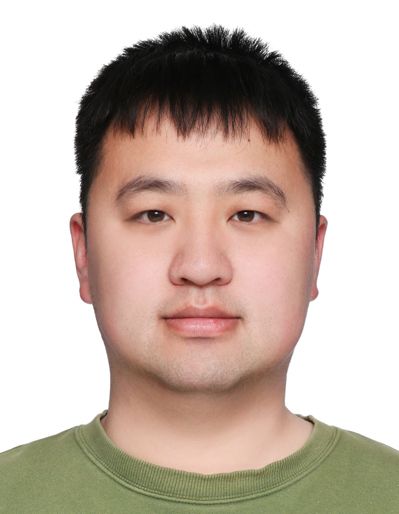 |
Shixiang Tang 唐诗翔
Postdoctoral Researcher The Chinese University of Hong Kong Email: shixiangtang (at) cuhk.edu.hk |
I am a postdoctoral researcher at the Chinese University of Hong Kong, working with Prof. Wanli Ouyang. I obtained my Ph.D. degree (2023) in University of Sydney. I obtained my Bachelor of Physics (2016) in Fudan University and Master of Philosophy in Physics at Chinese University of Hong Kong. My Ph.D. advisors are Prof. Wanli Ouyang and Dr. Dong Yuan.
My research interests include human-centric visual computing, human-centric foundation models.
| Special Session Chair, The 7th IEEE Conference on Energy Internet and Energy System Integration (EI2 2023). |
| Invited Reviewer for journals and conferences, including TPAMI, IJCV, TIP, TMM, TCSVT, CVPR, ICCV, ECCV, NeurIPS, ICLR, etc. |
| Australian Government RTP Scholarship (International), Austrilia, 2020 |
| Faculty of Engineering Career Advancement Award, University of Sydney, 2023 |
| CVPR Doctoral Consortium Award, 2023 |
| We are dedicated to enabling AI to understand humans and their interactions with the world, aiming to have machines not only mimic human behaviors but also genuinely learn the ways humans perceive and understand the world. |
| Specific research areas include: |
| • Unified Models for Human-centric Perception and Generation Tasks: Building a unified foundational model for perception and generation that leverages self-supervised learning, large language models, diffusion models, etc., to achieve high-precision multimodal human perception, human mesh reconstruction, and human generation, addressing key issues in fields such as virtual reality and smart sports. |
|
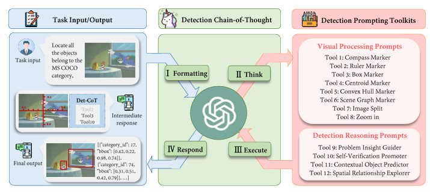
|
Yixuan Wu, Yizhou Wang, Shixiang Tang (corresponding author), Wenhao Wu, Tong He, Wanli Ouyang, Jian Wu, and Philip Torr
DetToolChain: A New Prompting Paradigm to Unleash Detection Ability of MLLM Arxiv, 2024. |
|
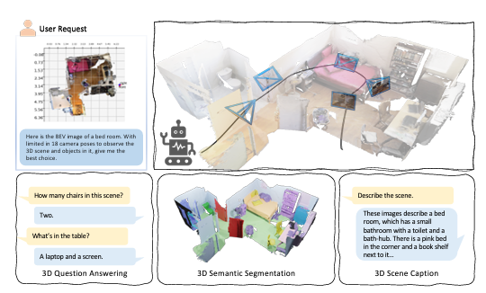
|
Sha Zhang, Di Huang, Jiajun Deng, Shixiang Tang, Wanli Ouyang, Tong He, and Yanyong Zhang
Agent3D-Zero: An Agent for Zero-shot 3D Understanding Arxiv, 2024. |
|
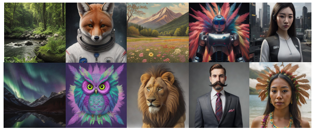
|
Hongjian Liu, Qingsong Xie, Zhijie Deng, Chen Chen, Shixiang Tang, Xueyang Fu, Zheng-jun Zha, and Haonan Lu
SCott: Accelerating Diffusion Models with Stochastic Consistency Distillation Arxiv, 2024. |
|
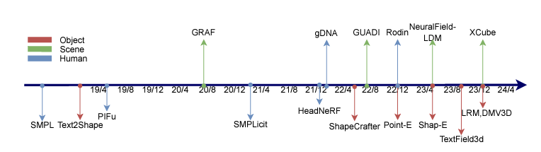
|
Jian Liu, Xiaoshui Huang, Tianyu Huang, Lu Chen, Yuenan Hou, Shixiang Tang, Ziwei Liu, Wanli Ouyang, Wangmeng Zuo, Junjun Jiang, and Xianming Liu
A Comprehensive Survey on 3D Content Generation Arxiv, 2024. |
|
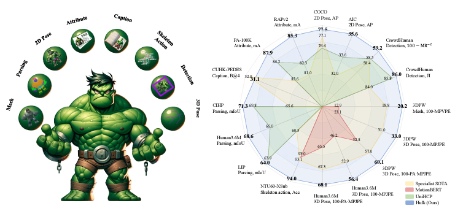
|
Yizhou Wang, Yixuan Wu, Shixiang Tang (corresponding author), Weizhen He, Xun Guo, Feng Zhu, Lei Bai, Rui Zhao, Jian Wu, Tong He, and Wanli Ouyang
Hulk: A Universal Knowledge Translator for Human-Centric Tasks Arxiv, 2023. |
|
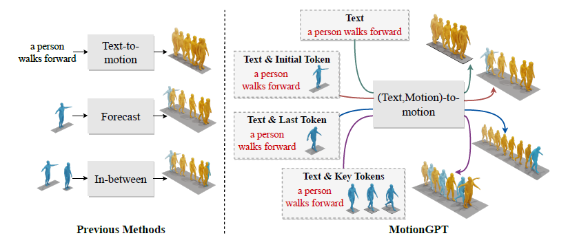
|
Yaqi Zhang, Di Huang, Bin Liu, Shixiang Tang, Yan Lu, Lu Chen, Lei Bai, Qi Chu, Nenghai Yu and Wanli Ouyang
MotionGPT: Finetuned LLMs Are General-Purpose Motion Generators AAAI Conference on Artificial Intelligence (AAAI), 2024. |
|
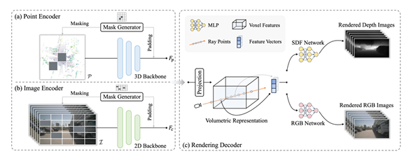
|
Honghui Yang, Sha Zhang, Di Huang, Xiaoyang Wu, Haoyi Zhu, Tong He, Shixiang Tang, Hengshuang Zhao, Qibo Qiu, Binbin Lin, Xiaofei He, Wanli Ouyang
Unipad: A universal pre-training paradigm for autonomous driving IEEE/CVF Conference on Computer Vision and Pattern Recognition (CVPR), 2024. |
|
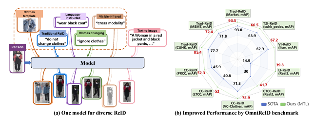
|
Weizhen He, Shixiang Tang (corresponding author), Yiheng Deng, Qihao Chen, Qingsong Xie, Yizhou Wang, Lei Bai, Feng Zhu, Rui Zhao, Wanli Ouyang, Donglian Qi, Yunfeng Yan
Instruct-ReID: A Multi-purpose Person Re-identification Task with Instructions IEEE/CVF Conference on Computer Vision and Pattern Recognition (CVPR), 2024. |
|
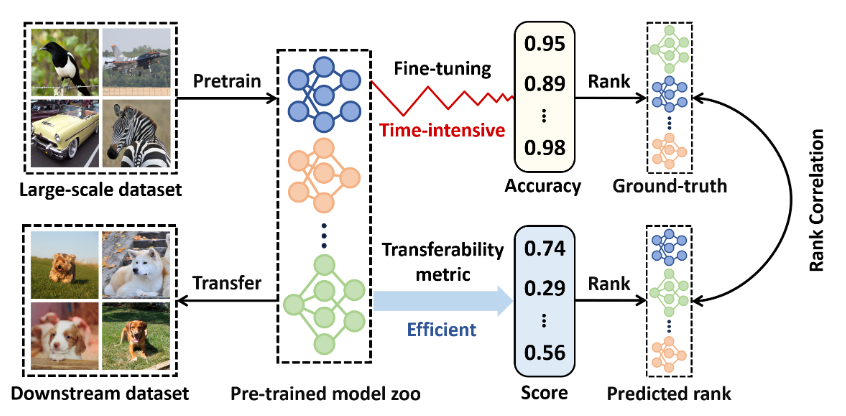
|
Zixuan Hu, Xiaotong Li, Shixiang Tang, Jun Liu, Yichun Hu, LINGYU DUAN
LEAD: Exploring Logit Space Evolution for Model Selection IEEE/CVF Conference on Computer Vision and Pattern Recognition (CVPR), 2024. |
|
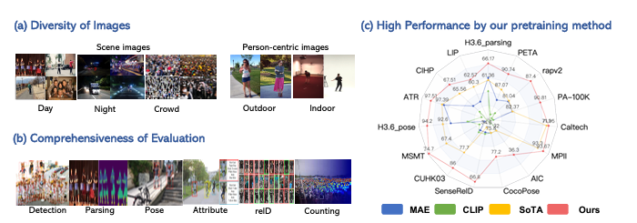
|
Shixiang Tang, Cheng Chen, Qingsong Xie, Meilin Chen, Yizhou Wang, Yuanzheng Ci, Lei Bai, Feng Zhu, Haiyang Yang, Li Yi, Rui Zhao, Wanli Ouyang
Humanbench: Towards general human-centric perception with projector assisted pretraining IEEE/CVF Conference on Computer Vision and Pattern Recognition (CVPR), 2023. |
|
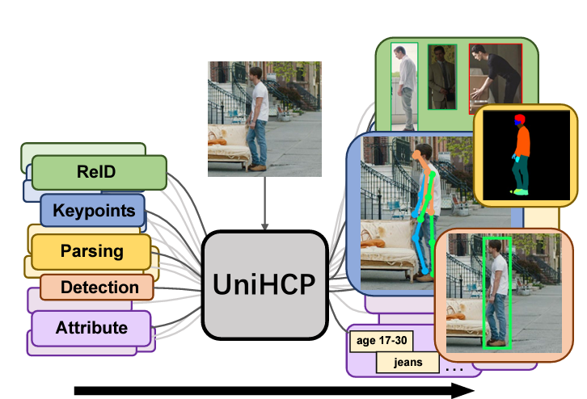
|
Yuanzheng Ci, Yizhou Wang, Meilin Chen, Shixiang Tang, Lei Bai, Feng Zhu, Rui Zhao, Fengwei Yu, Donglian Qi, Wanli Ouyang
UniHCP: A Unified Model for Human-Centric Perceptions IEEE/CVF Conference on Computer Vision and Pattern Recognition (CVPR), 2023. |
|
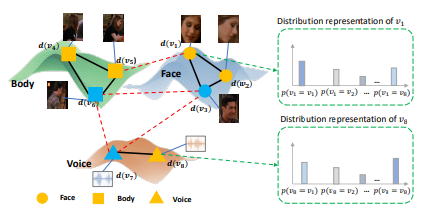
|
Kaijian Liu, Shixiang Tang (co-first author), Ziyue Li, Zhishuai Li, Lei Bai, Feng Zhu, Rui Zhao
Relation-Aware Distribution Representation Network for Person Clustering With Multiple Modalities IEEE Transactions on Multimedia (TMM), 2023. |
|
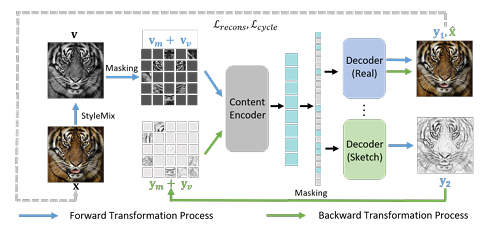
|
Haiyang Yang, Xiaotong Li, Shixiang Tang (corresponding author), Feng Zhu, Yizhou Wang, Meilin Chen, Lei Bai, Rui Zhao, Wanli Ouyang
Cycle-consistent Masked Autoencoder for Unsupervised Domain Generalization The Eleventh International Conference on Learning Representations (ICLR), 2022. |
|
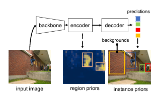
|
Yizhou Wang, Meilin Chen, Shixiang Tang (corresponding author), Feng Zhu, Haiyang Yang, Lei Bai, Rui Zhao, Yunfeng Yan, Donglian Qi, Wanli Ouyang
Unsupervised object detection pretraining with joint object priors generation and detector learning Advances in neural information processing systems (NeurIPS), 2022. |
|
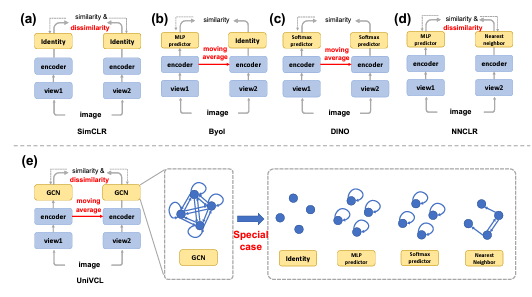
|
Shixiang Tang, Feng Zhu, Lei Bai, Rui Zhao, Chenyu Wang, Wanli Ouyang
Unifying visual contrastive learning for object recognition from a graph perspective European Conference on Computer Vision (ECCV), 2022. |
|
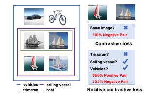
|
Shixiang Tang, Feng Zhu, Lei Bai, Rui Zhao, Wanli Ouyang
Relative contrastive loss for unsupervised representation learning European Conference on Computer Vision (ECCV), 2022. |
|
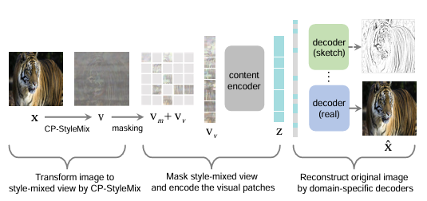
|
Haiyang Yang, Shixiang Tang, Meilin Chen, Yizhou Wang, Feng Zhu, Lei Bai, Rui Zhao, Wanli Ouyang
Domain invariant masked autoencoders for self-supervised learning from multi-domains European Conference on Computer Vision (ECCV), 2022. |
|
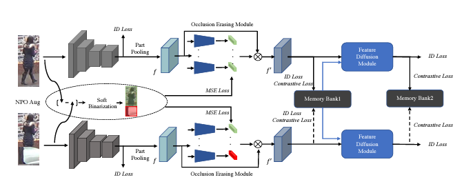
|
Zhikang Wang, Feng Zhu, Shixiang Tang, Rui Zhao, Lihuo He, Jiangning Song
Feature erasing and diffusion network for occluded person re-identification IEEE/CVF Conference on Computer Vision and Pattern Recognition (CVPR), 2022. |
|
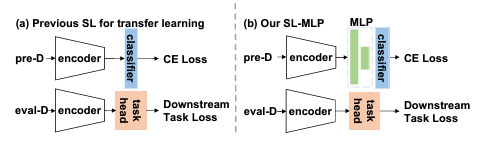
|
Yizhou Wang, Shixiang Tang (co-first author), Feng Zhu, Lei Bai, Rui Zhao, Donglian Qi, Wanli Ouyang
Revisiting the transferability of supervised pretraining: an mlp perspective IEEE/CVF Conference on Computer Vision and Pattern Recognition (CVPR), 2022. |
|
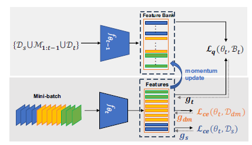
|
Shixiang Tang, Peng Su, Dapeng Chen, Wanli Ouyang
Gradient regularized contrastive learning for continual domain adaptation Proceedings of the AAAI Conference on Artificial Intelligence (AAAI), 2021 |
|
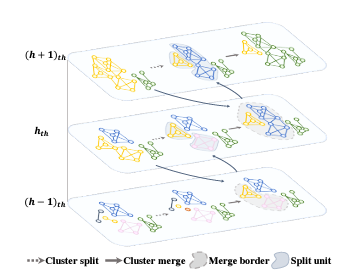
|
Yi Zheng, Shixiang Tang (co-first author), Guolong Teng, Yixiao Ge, Kaijian Liu, Jing Qin, Donglian Qi, Dapeng Chen
Online pseudo label generation by hierarchical cluster dynamics for adaptive person re-identification Proceedings of the IEEE/CVF international conference on computer vision (ICCV), 2021 |
|
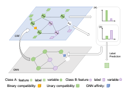
|
Shixiang Tang, Dapeng Chen, Lei Bai, Kaijian Liu, Yixiao Ge, Wanli Ouyang
Mutual crf-gnn for few-shot learning IEEE/CVF Conference on Computer Vision and Pattern Recognition (CVPR), 2021 |
|
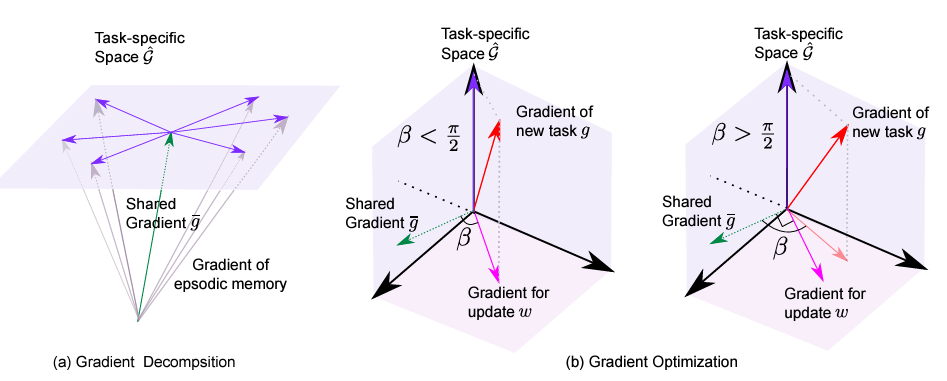
|
Shixiang Tang, Dapeng Chen, Jinguo Zhu, Shijie Yu, Wanli Ouyang
Layerwise optimization by gradient decomposition for continual learning IEEE/CVF Conference on Computer Vision and Pattern Recognition (CVPR), 2021 |
|
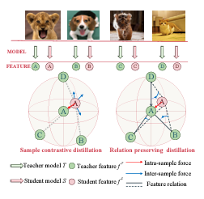
|
Jinguo Zhu, Shixiang Tang, Dapeng Chen, Shijie Yu, Yakun Liu, Mingzhe Rong, Aijun Yang, Xiaohua Wang
Complementary relation contrastive distillation IEEE/CVF Conference on Computer Vision and Pattern Recognition (CVPR), 2021 |
|
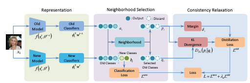
|
Bo Zhao, Shixiang Tang, Dapeng Chen, Hakan Bilen, Rui Zhao
Continual representation learning for biometric identification Proceedings of the IEEE/CVF winter conference on applications of computer vision (WACV), 2021 |
|
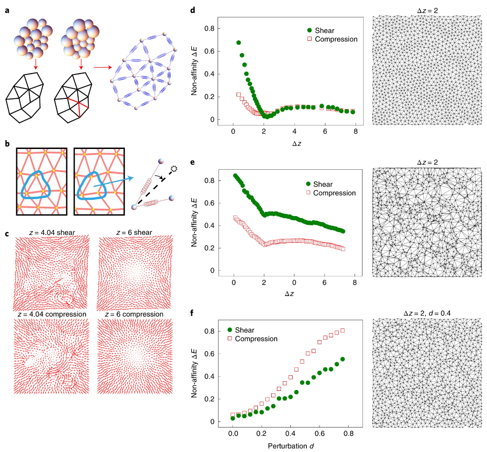
|
Xiangying Shen, Chenchao Fang, Zhipeng Jin, Hua Tong, Shixiang Tang, Hongchuan Shen, Ning Xu, Jack Hau Yung Lo, Xinliang Xu, Lei Xu
Achieving adjustable elasticity with non-affine to affine transition Nature Materials (NM), 2021. |
|
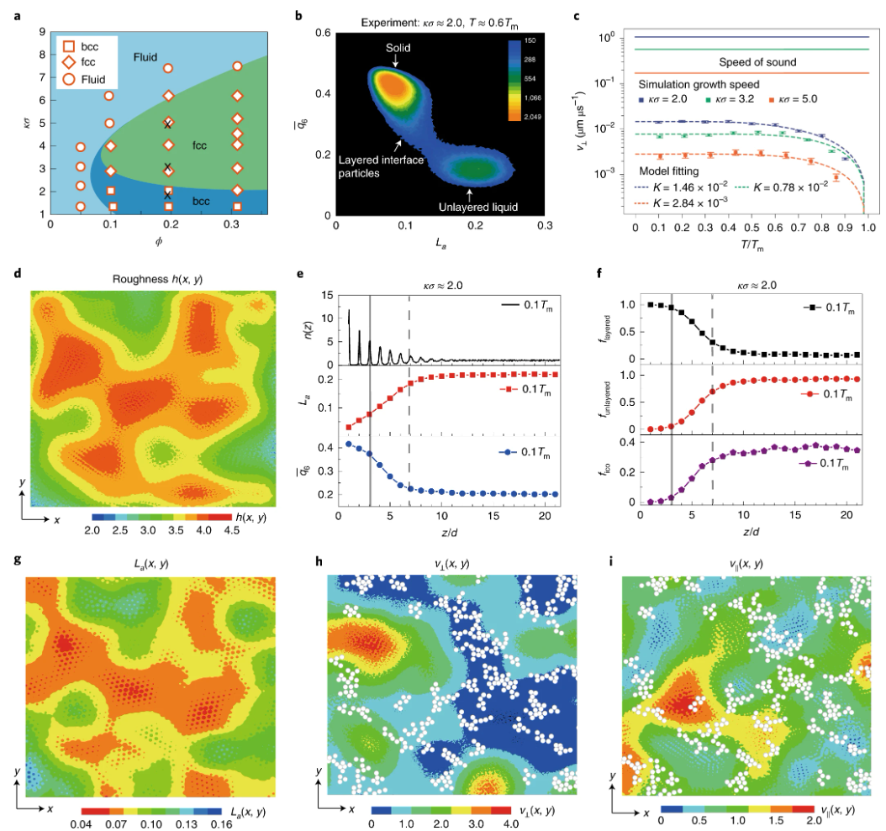
|
Qiong Gao, Jingdong Ai, Shixiang Tang (co-first author), Minhuan Li, Yanshuang Chen, Jiping Huang, Hua Tong, Lei Xu, Limei Xu, Hajime Tanaka, Peng Tan
Fast crystal growth at ultra-low temperatures Nature Materials (NM), 2021. |
|
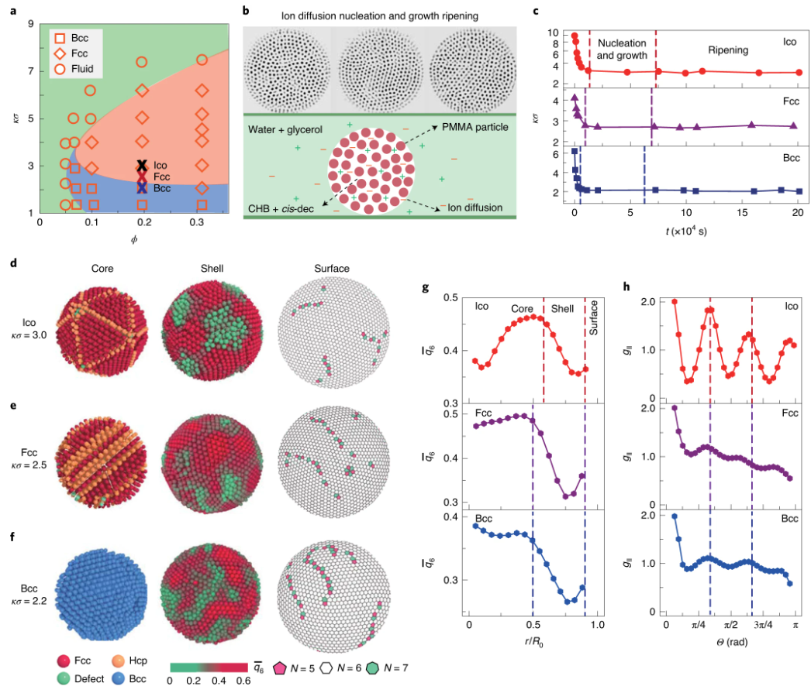
|
Yanshuang Chen, Zhenwei Yao, Shixiang Tang, Hua Tong, Taiki Yanagishima, Hajime Tanaka, Peng Tan
Morphology selection kinetics of crystallization in a sphere Nature Physics (NP), 2021. |